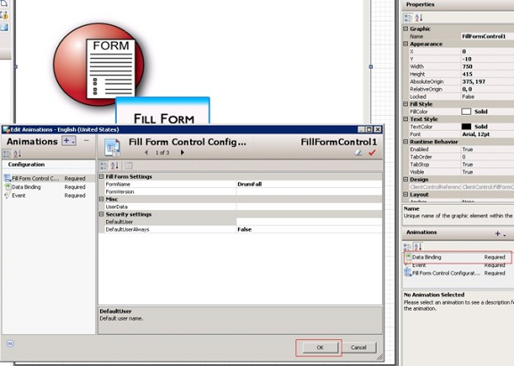
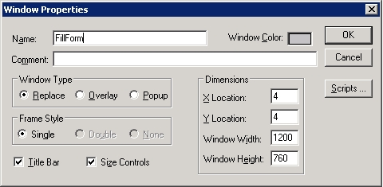
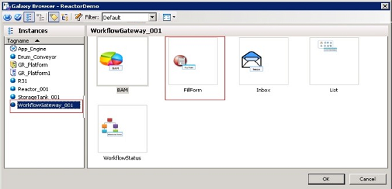

This will open up a new configuration page from where the Forms control can be configured.
- In the Form Name field, enter the form name.
- In the Form Version field, enter the version of the form, which must be considered by the Fill Form.
For the Fill Form control to consider the latest published version of the form, enter the value as 0 or leave this field blank.
If you enter an invalid version, then the "The given version does not exist for the form" message appears.


The InTouch WindowMaker appears.



This opens up the ArchestrA Galaxy Browser.



The Forms Control loads in the window.
Note: InTouch does not support the execution of window.resizeTo(x, y) JavaScript function.